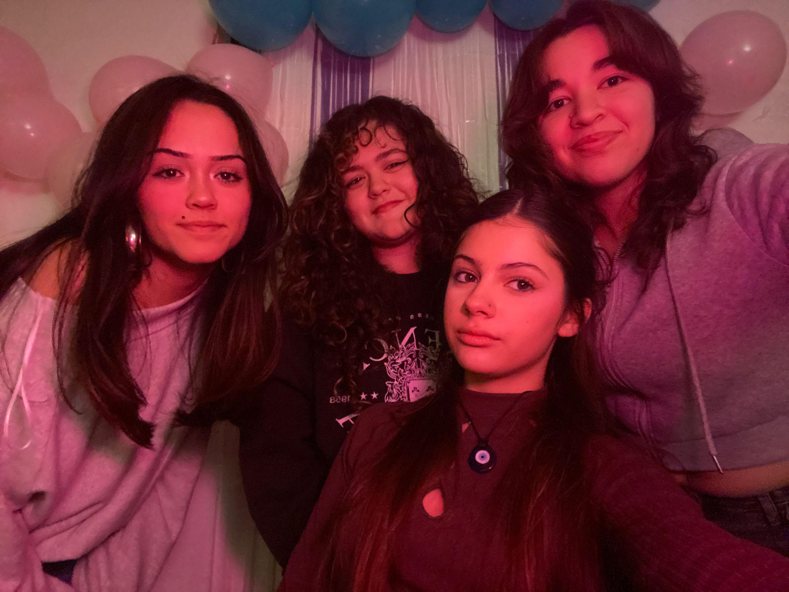
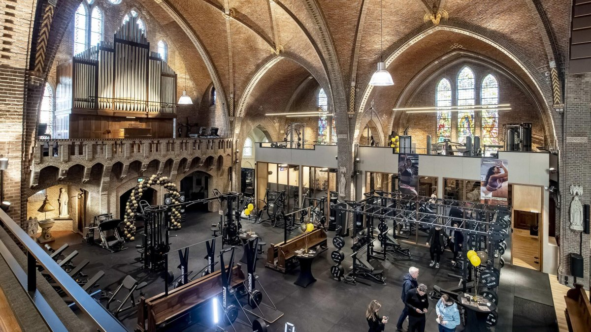
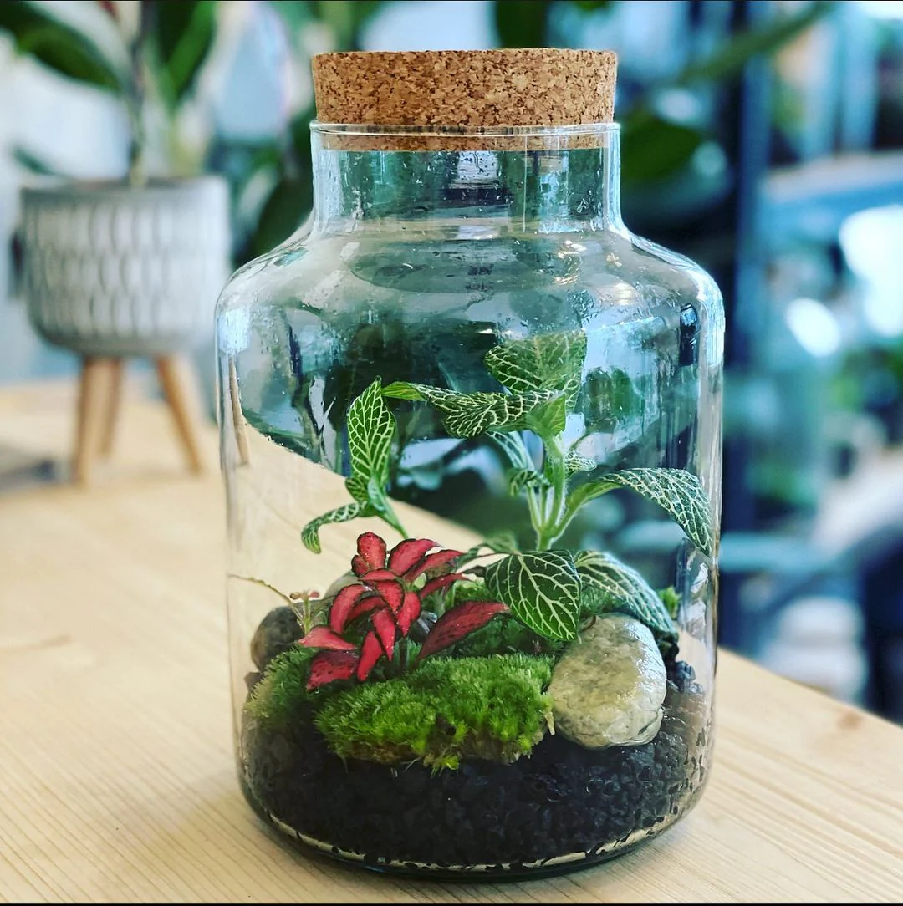
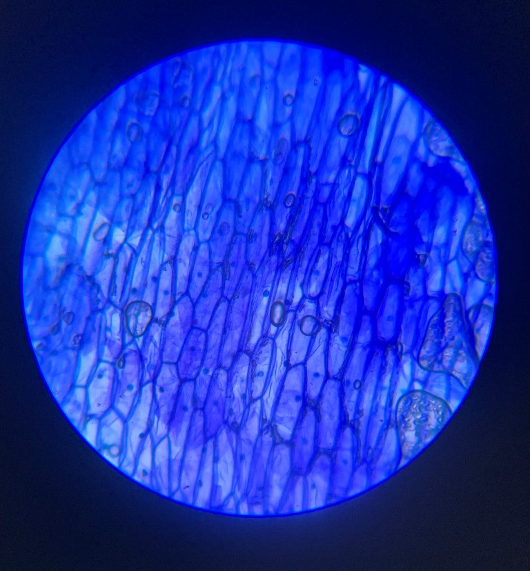
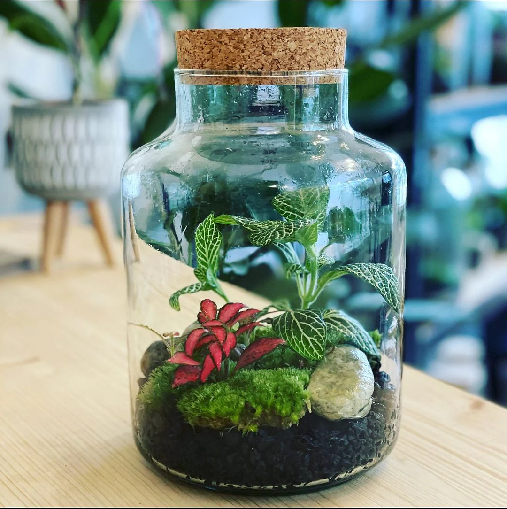
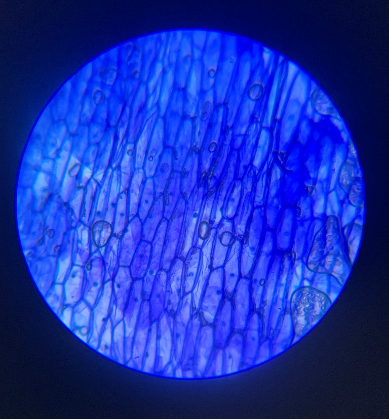

"Al menos se queda la experiencia" Estudiante.
|
|
|
Soy estudiante de 2º de bachillerato de ciencias de la salud, tambiém conocido como el bachillerato biológico. Mis intereses a niveles más serios los tengo un poco difusos
(por no decir mucho).
|
|
En mi tiempo libre (el que no tengo) me gusta:
|
 |

|
 |
|
|

Tate Mcrae |

Duki |

Attack on titan |
He trabajado en algunos proyectos relacionados con el instituto:
 



|
A nivel personal he sido ganadora provincial del certamen literario celebrado duarante la feria del libro anual del año 2024, con un relato sobre la inteligencia artificial,
enfocadolo al impacto de esta en las emociones humanas en un espacio futurista.
Para más información del evento en general visita
el enlace de la feria 2026.
Me gustaría que fuese una afición que siga desarrollándose y en el futuro que tome la forma de una obra propiamente dicha.
Sitio web desarrollado por Gloria Toral, 2026.
Contacto: practica2@gmail.com